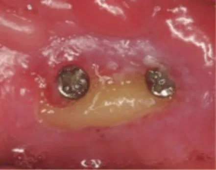
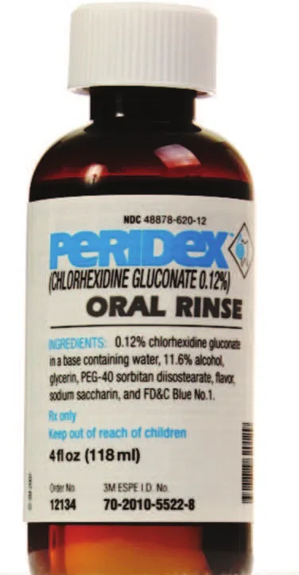

نسخه استخراجشده؛ ترجمه یا تأیید علمی انجام نشده است. وضعیت: captured
وقتی خط برش باز شد، اولین پرسش این است: دوباره بخیه بزنم یا نه؟ و پاسخ مشروط است.
رویکرد پیشفرض، پروتکل ترمیم ثانویه است: تخلیهی پروتز موقت از روی زخم، تمیز کردن موضعی با کلرهگزیدین ۰٫۱۲ درصد، و ویزیت دستکم هفتهای یک بار در ماه اول. بخیهی مجدد روش دشوارتر و کمپیشبینیتری است، چون اپیتلیوم زخم تازه نازک و شکننده است و اغلب پاره میشود — که میتواند دهیسنس بزرگتر یا عفونت بسازد.
استثنا: وقتی دهیسنس کوچک است و ظرف ۲۴ تا ۴۸ ساعت رخ داده، میتوان بلافاصله دوباره بخیه زد — به شرط آنکه لبهها پیش از بخیه با اسکالپل یا فرز الماسی تازه شوند.
دو شرط را با هم ببین: کوچک و زودهنگام. اگر هر کدام نباشد، این توصیه اعمال نمیشود.
و چرا این مرز؟ وقتی دهیسنس بزرگ است (۲ تا ۳ سانتیمتر) یا بیش از ۲ تا ۳ روز گذشته، برشدادن و تازهکردن لبهها و بخیهی دوبارهشان دشوارتر میشود. پس با هر روز تأخیر و هر سانتیمتر بزرگتر شدن زخم، کفهی ترازو به سمت پروتکل ترمیم ثانویه سنگینتر میشود.
یادت باشد: بخیهای که روی لبهی شکننده پاره شود، دهیسنس را بزرگتر میکند؛ پس در شک، ترمیم ثانویه امنتر است.
کشیدن بخیه — عارضهای که خودِ درمان میسازد.
کشیدن آتروماتیک بخیه خودش مبحثی مستقل است و اتیولوژی عارضهاش روشن است:
«کشیدن بخیهها خیلی زود یا بهصورت ترومایی میتواند به باز شدن خط برش بینجامد و ترمیم تأخیری بسازد که به موربیدیتی ایمپلنت یا پیوند استخوان میانجامد.»
دو خطای جداگانه در یک جمله: خیلی زود (خطای زمانبندی) و ترومایی (خطای تکنیک). هر دو به یک نتیجه میرسند.
کشیدن آتروماتیک یعنی: نخهای غیرجذبی معمولاً ۱۰ تا ۱۴ روز پس از جراحی کشیده میشوند؛ بیمار پیش و پس از کار با کلرهگزیدین ۰٫۱۲ درصد دهان را میشوید؛ نخ را نزدیک بافت ببُر و با گرهای که بیرون بافت است بیرون بکش — هرگز گره را از میان زخم رد نکن.
و اینجاست که مزیت نخهای جذبی معنا پیدا میکند: نیاز به کشیدن ندارند — یعنی این دو خطا را از میدان حذف میکنند.
و در سمت دیگر، نخهای ماندگار: پلیپروپیلن استحکامش را با زمان از دست نمیدهد و PTFE استحکام بالا و ماهیت غیرفتیلهای دارد — یعنی مایع و باکتری را در امتداد نخ به عمق نمیکشد. در محلهای پرخطر، همین ویژگی میتواند تعیینکننده باشد.
جزئیات تکنیکی: موقعیت درست دست روی سوزنگیر، گرهی ایدهآل که تخت است، و سوزنگیرهایی با اینسرت کاربایدی برای گرفتن بهتر. اینها جزئیاتیاند که تفاوت میان بخیهی محکم و بخیهی لغزنده را میسازند.

پیامدهای عفونت پس از عمل طیفی دارند که باید جدی گرفته شود:
«موارد مستندشده از پیامدهای بالقوهی عفونت از افزایش درد و ادم تا مرگ بیمار گستردهاند.»
و در کنارش: عفونتهای زخم جراحی پس از عمل میتوانند تأثیر قابلتوجهی بر سلامت بیمار و بقای ایمپلنت داشته باشند.
پروتکل ضدمیکروبی — سه لایه:
۱. سیستمیک: آنتیبیوتیک پیشگیرانهی سیستمیک در فاز پیش و پس از عمل.
۲. موضعی در گرافت: افزودن آنتیبیوتیک موضعی مانند سفازولین (Ancef) یا کلیندامایسین (Cleocin) به مادهی پیوند برای پوشش ضدمیکروبی بیشتر — از فرم تزریقی؛ قرص و کپسول خوراکی بهخاطر مواد پرکنندهشان برای گرافت مناسب نیستند.
۳. دهانشویه: کلرهگزیدین دیگلوکونات ۰٫۱۲ یا ۰٫۲ درصد.
چرا سه لایه؟ به یونیت پیوند سینوس برگرد: محل گرافت یک فضای مرده با حداقل خونرسانی است. دارویی که از راه خون میآید، پس از پایدار شدن لخته به آنجا نمیرسد. لایهی موضعی، همان جایی را پوشش میدهد که لایهی سیستمیک نمیرسد.
یک عارضهی نادر ولی آموزنده — مهاجرت آلوگرفت. موردی از پیوند دیوارهی جانبی سینوس در سینوس ماگزیلای دارای عفونت فعال، با پرفوراسیون شناختهشدهی ممبران، گزارش شده است: مادهی پیوند از راه عروق لنفاوی تا غدد لنفاوی زیرفکی مهاجرت کرد و غدهی زیرفکی ناچار برداشته شد. یادآوری این که پیوند در محیط عفونی، پیوند نیست؛ کاشتن ماده در یک عفونت است.
و یک عامل که بهراحتی از قلم میافتد: کاهش pH دهان میتواند از عفونت، داروها، اختلالات متابولیک یا خشکی دهان ناشی شود — و در pH پایین، نخهای گات که با آنزیم تجزیه میشوند زودتر از موعد از هم میپاشند، ولی PGA که با هیدرولیز تجزیه میشود اثر نمیپذیرد. خشکی دهان خودش هم ترمیم زخم را کند میکند.
پروتز موقت و محل زخم: ریلاین نرم آکریلی معمولاً سلفکیور (cold-cure) است و باید روی ناحیهی برش تخلیه (relieve) شود. و مادهی درمان بافتی (tissue conditioner) برای اثر مؤثر ممکن است هر ۳ روز یک بار و تا ۳۰ روز تعویض لازم داشته باشد، بسته به ماده.
این یعنی پروتز موقت یک وسیلهی «بگذار و فراموش کن» نیست؛ خودش یک برنامهی پیگیری دارد.
و بازگشت به آبشار: همهی این لایهها برای جلوگیری از یک زنجیرهاند که در ابتدای این بخش دیدیم — دهیسنس زخم ← نبود اینتگریشن یا شکست افزایش بافت سخت و نرم.
و به یاد بیاور که باتجربهترین جراحان ایمپلنت، حفظ خطوط برش را یکی از بزرگترین دشواریهای منحنی یادگیری خود میدانند. اگر این بخش برایت سخت است، در جمع درستی هستی.
